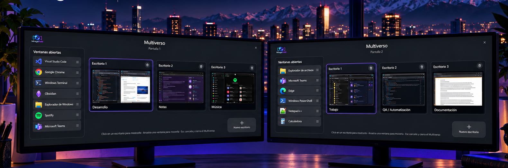
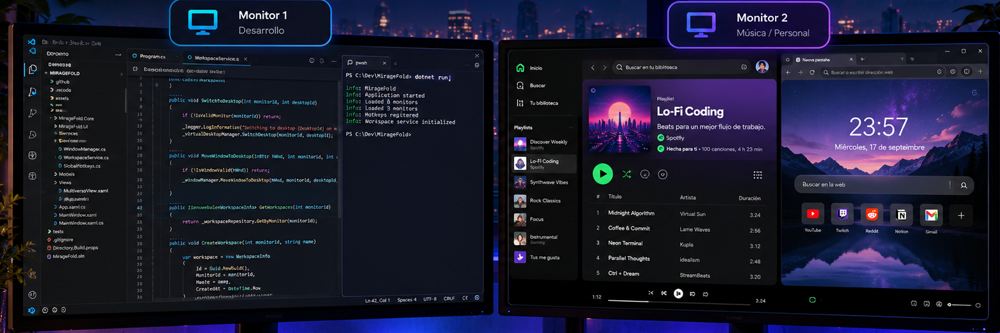
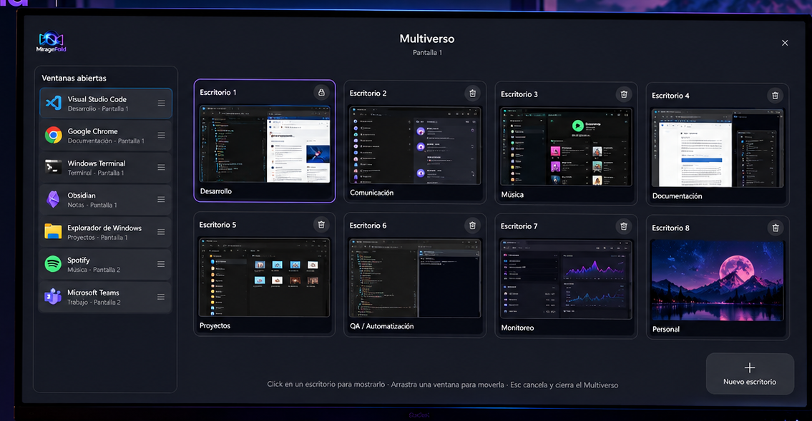
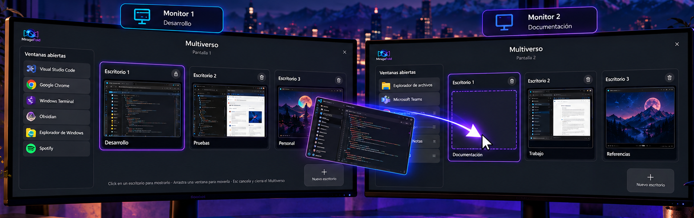
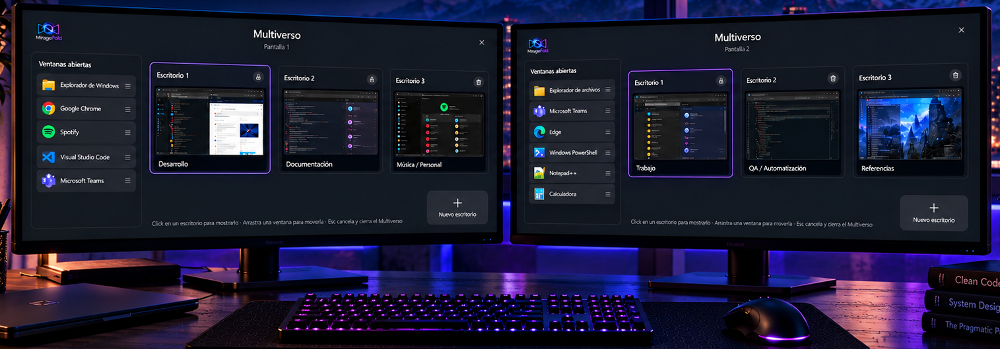
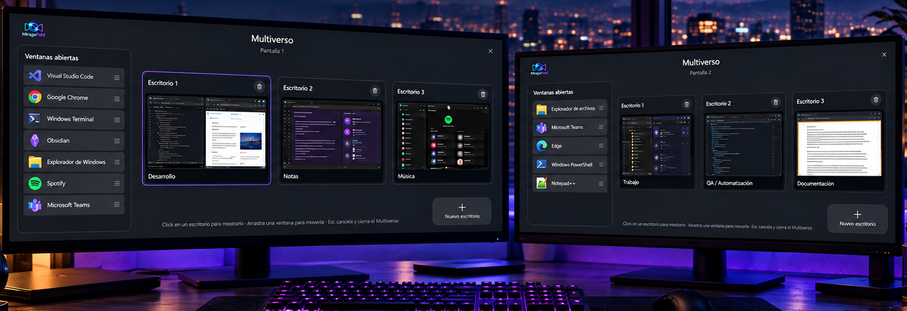

Cada monitor.
Sus propios espacios.
MirageFold permite que cada pantalla mantenga sus propios escritorios. Cambia de espacio en un monitor mientras los demás permanecen exactamente donde los necesitas.
Software propietario distribuido gratuitamente por Corvin Develop.

Tu escritorio ya no tiene por qué moverse como un bloque.
En Windows, cambiar de escritorio virtual afecta a todas las pantallas. MirageFold crea una capa de espacios de trabajo por monitor para que puedas mantener una referencia visible en una pantalla y cambiar de contexto únicamente en otra.
“Nació porque solo quería copiar un username desde Obsidian sin hacer desaparecer mi otro monitor.”
Trabaja diferente en cada pantalla.
Cada monitor conserva su propio conjunto de escritorios. Navega entre ellos sin alterar lo que estás viendo en las otras pantallas y mantén cada contexto donde corresponde.
- Escritorios independientes por monitor.
- Cantidad dinámica de espacios de trabajo.
- Posición, tamaño y estado de tus ventanas preservados.
- Navegación rápida siguiendo el orden visual de tus escritorios.

Todos tus espacios, en una sola vista.
Abre Multiverso para ver los escritorios de cada pantalla, sus ventanas y su organización. Crea, elimina, reordena o cambia de espacio sin perder de vista tu flujo de trabajo.

Arrastra. Mueve. Continúa.
Mueve una ventana de un escritorio a otro o llévala a otra pantalla directamente desde Multiverso. También puedes trasladar escritorios completos conservando sus ventanas y su organización.
MirageFold se encarga del cambio de monitor y del estado de la ventana para que tú solo decidas dónde quieres trabajar.

Está cuando lo necesitas. Desaparece cuando no.
MirageFold vive discretamente en la bandeja del sistema y puede iniciarse junto con Windows. Abre Multiverso con Windows + Tab y vuelve a tu trabajo sin mantener otra aplicación ocupando espacio.
También puedes configurar un gesto avanzado del touchpad para abrir Multiverso mediante el atajo alternativo.

Distintos espacios.
El mismo flujo de trabajo.
Una utilidad para Windows pensada especialmente para quienes trabajan con varios monitores y quieren controlar cada pantalla como un espacio propio.

Gratis. Sin anuncios. Sin suscripción.
MirageFold será distribuido gratuitamente para Windows a través de Microsoft Store.